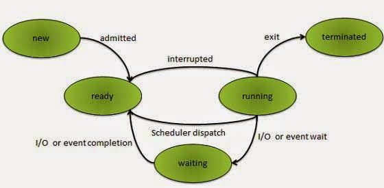

Manajemen Proses dalam Sistem Operasi
Definisi Proses
Proses adalah program yang sedang dieksekusi, termasuk semua konteks yang diperlukan untuk menjalankan program tersebut seperti counter program, register, dan variabel. Tanpa sistem operasi, komputer hanya akan mengeksekusi satu instruksi per satu waktu, sehingga manajemen proses dibutuhkan untuk memungkinkan multitasking dan penggunaan sumber daya secara efektif.
Komponen Proses
- Program Code: Kode program itu sendiri (instruksi-instruksi yang harus dijalankan).
- Program Counter: Lokasi instruksi berikutnya yang akan dijalankan.
- Stack: Menyimpan informasi fungsi seperti parameter dan variabel lokal.
- Data Section: Menyimpan data global dan variabel dinamis.
- Heap: Bagian untuk alokasi memori dinamis selama runtime.
Siklus Hidup Proses
- New: Proses baru dibuat.
- Ready: Proses siap untuk dijalankan oleh CPU.
- Running: Proses sedang dieksekusi.
- Waiting: Proses menunggu event atau sumber daya.
- Terminated: Proses selesai atau dihentikan.
Penjadwalan Proses
Penjadwalan proses menentukan proses mana yang akan dijalankan terlebih dahulu. Sistem operasi menggunakan algoritma berikut:
- FCFS (First Come, First Served): Proses yang datang lebih dahulu dilayani lebih dahulu.
- SJF (Shortest Job First): Proses dengan waktu eksekusi terpendek diprioritaskan.
- Priority Scheduling: Proses dengan prioritas tertinggi dijalankan dulu.
- Round Robin: Setiap proses mendapat jatah waktu CPU secara bergilir.
Contoh Studi Kasus
Kasus: Pada saat membuka 5 tab browser dan menjalankan pemutar musik, bagaimana CPU memilih tab yang akan diproses?
Jawaban: Sistem operasi menggunakan penjadwalan preemptive (Round Robin) untuk membagi waktu CPU dengan adil antara semua tab browser dan pemutar musik agar semua tetap responsif.